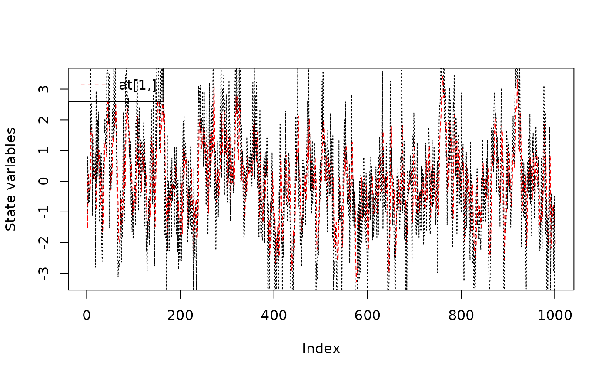
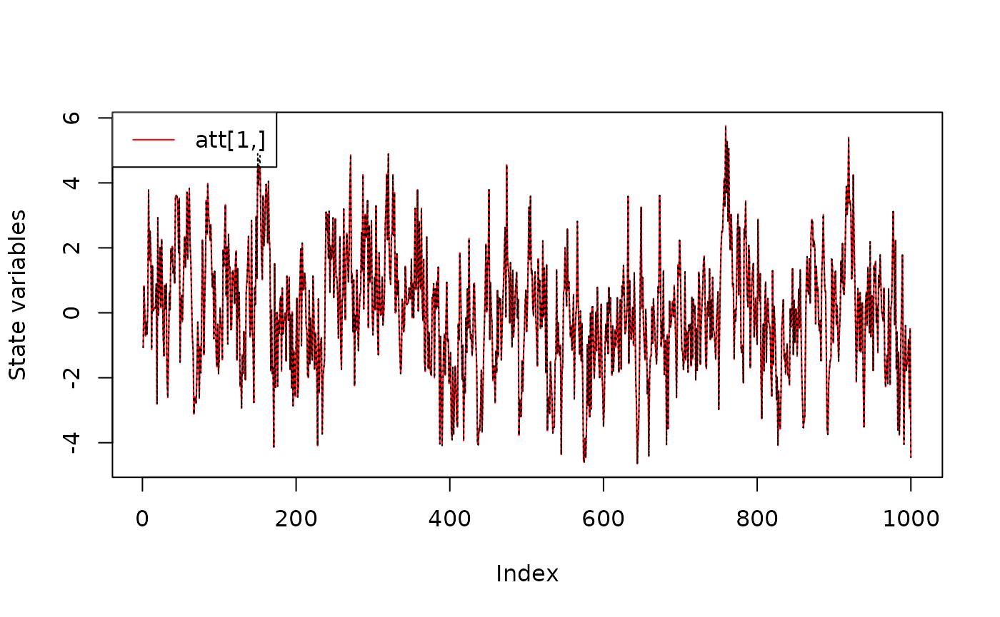
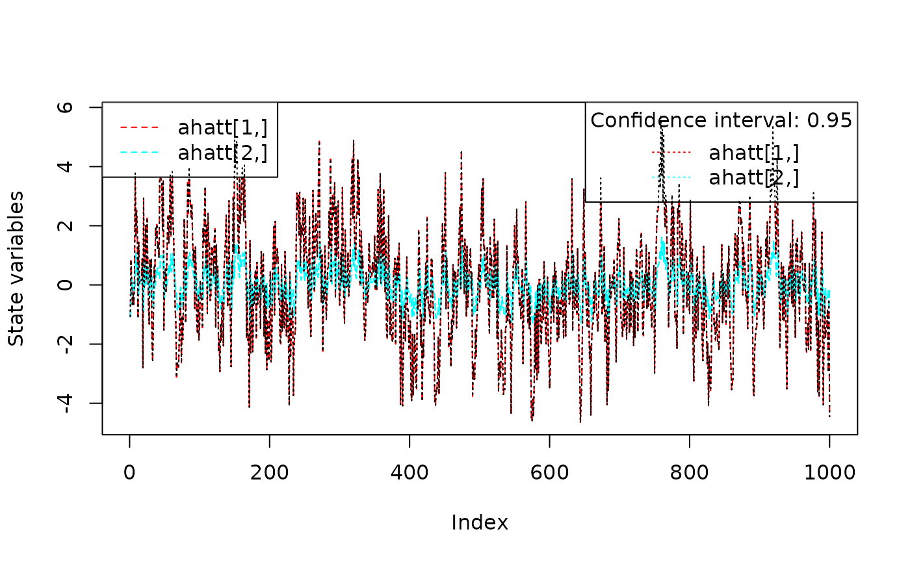

To demonstrate the use of the FKF package this example shows how to fit an ARMA(2, 1) model using this Kalman filter implimentation and teh extraction of the resulting filtered and smoothed estimates.
Start by loading the package:
A data set of 1000 points is generated from the model \[ a_{t} = \frac{-0.2}{1 - 0.6z^{-1} - 0.2z^{-1}}\eta_t \] where \(\eta_{t} \sim N\left(0,0.2\right)\)
To estimate the parameters using numerical optimisation two functions are specified. The first creates a state space representation out of the four ARMA parameters
arma21ss <- function(ar1, ar2, ma1, sigma) {
Tt <- matrix(c(ar1, ar2, 1, 0), ncol = 2)
Zt <- matrix(c(1, 0), ncol = 2)
ct <- matrix(0)
dt <- matrix(0, nrow = 2)
GGt <- matrix(0)
H <- matrix(c(1, ma1), nrow = 2) * sigma
HHt <- H %*% t(H)
a0 <- c(0, 0)
P0 <- matrix(1e6, nrow = 2, ncol = 2)
return(list(a0 = a0, P0 = P0, ct = ct, dt = dt, Zt = Zt, Tt = Tt, GGt = GGt,
HHt = HHt))
}The second is the objective function passed to optim which returns the noegative log-likelihood
objective <- function(theta, yt) {
sp <- arma21ss(theta["ar1"], theta["ar2"], theta["ma1"], theta["sigma"])
ans <- fkf(a0 = sp$a0, P0 = sp$P0, dt = sp$dt, ct = sp$ct, Tt = sp$Tt,
Zt = sp$Zt, HHt = sp$HHt, GGt = sp$GGt, yt = yt)
return(-ans$logLik)
}Estimation is then performed using a numeric search by optim
First consider the 95% CI for the parameter estimate which can be constructed using the hessian of the fit:
## Confidence intervals
p <- cbind(actual = c(ar1=ar1,ar2=ar2,ma1=ma1,sigma=sigma),
estimate = fit$par,
lowerCI = fit$par - qnorm(0.975) * sqrt(diag(solve(fit$hessian))),
upperCI = fit$par + qnorm(0.975) * sqrt(diag(solve(fit$hessian))))
p
#> actual estimate lowerCI upperCI
#> ar1 0.6000000 0.52456351 0.3337876 0.7153395
#> ar2 0.2000000 0.23844614 0.1101194 0.3667729
#> ma1 -0.2000000 -0.09445465 -0.2930735 0.1041642
#> sigma 0.4472136 0.44304410 0.4236168 0.4624714showing the actual parameters fall within the 95% CI of the estimated values.
The series can be filtered usinf the estimated parameter values
sp <- arma21ss(fit$par["ar1"], fit$par["ar2"], fit$par["ma1"], fit$par["sigma"])
ans <- fkf(a0 = sp$a0, P0 = sp$P0, dt = sp$dt, ct = sp$ct, Tt = sp$Tt,
Zt = sp$Zt, HHt = sp$HHt, GGt = sp$GGt, yt = rbind(a))This allows comparision of the prediction with the realization
 and comparision of the filtered series with the realization

The plotting function for the fkf class also allows visual checking of whether the residuals are Gaussian
plot(ans, type = "resid.qq")or if there is a linear serial dependence through ‘acf’
plot(ans, type = "acf")The smoothed estimates can also be computed by a simple call to fks
sm <- fks(ans)
#>
#>
#> Number complete obs: 1000
#>
#>
#> Number reduced obs: 0
#>
#>
#> Number no obs: 0The smoothed estiamte with confidence intervals can be plotted alongside the observed data
plot(sm)
#> Warning in sqrt(x$Vt[ahatt.idx[i], ahatt.idx[i], ]): NaNs produced
#> Warning in sqrt(x$Vt[ahatt.idx[i], ahatt.idx[i], ]): NaNs produced
lines(a,col="black")